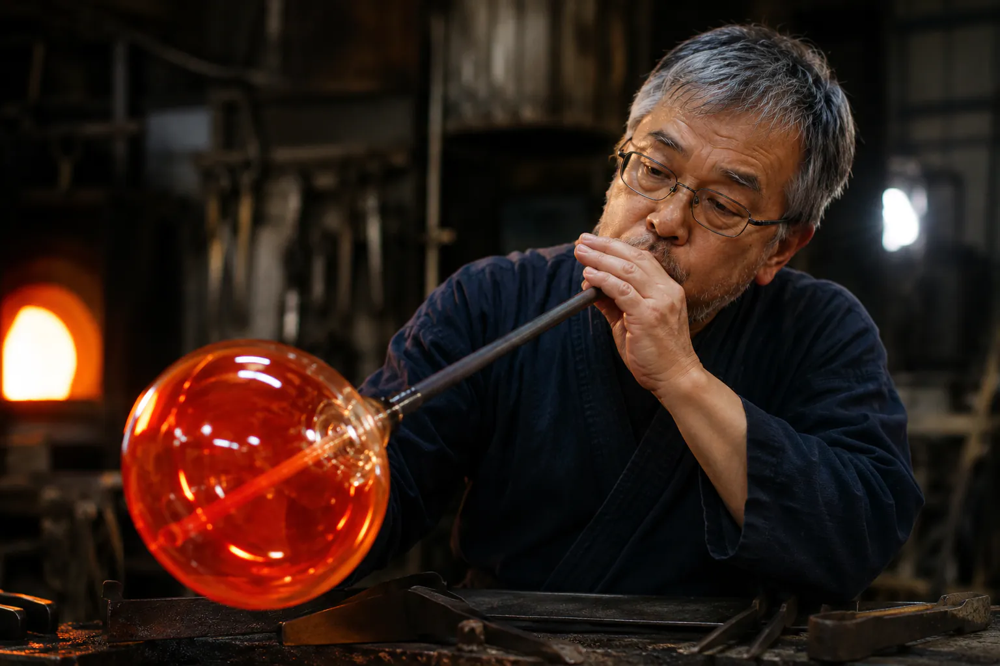
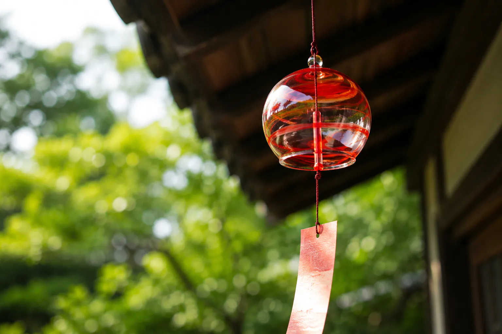

じりじりと照りつける夏の太陽が、工房のトタン屋根を焦がす季節が近づいてまいりました。 皆様、いかがお過ごしでしょうか。栗男硝子（ぐりおがらす）工房の光道です。 静岡県静岡市の豊かな森と、澄んだ雪解け水に恵まれた私たちの小さな工房では、本格的な夏を前に、毎日1024度を超える溶解炉の熱気と向き合う、一年で最も「熱い」製作の日々を迎えています。 吹き硝子は、熱せられてドロドロになった赤いガラスが、空気中で冷えて硬化していく、ほんの数分、数秒の短い猶予の中で形を生み出します。 本日は、そんな息をつく暇もない熱情の中から生まれる、驚くほど透明で、暮らしに涼やかさをもたらし、心をも清めてくれる硝子器たちのストーリーをご紹介します。 一、蜜（みつ）のように溶けるガラス。一瞬の呼吸と、1024度の呼吸。 工房のエントランスをくぐると、ごうごうと地鳴りのような炉の音が響いています。 ガラスの主原料である珪砂（けいしゃ）や炭酸ソーダなどを調合し、1024度以上の溶解炉の中で一晩かけてじっくり溶かしたガラスは、まるで濁りのない黄金色の“蜂蜜”のようにとろりと、たゆたっています。 この熱いガラスを「吹き竿」と呼ばれる細長口の金属製管の端に巻き取り、息を吹き込むのが「吹き硝子」の原点です。 巻き取った直後のガラスの温度は約1024度。金属の竿を通じてすら、その凄まばゆい熱量と脈打つようなガラスの「重み」が肌に伝わってきます。 ただ息を吹き込めばよいというわけではありません。強すぎる息はガラスを風船のように薄く破裂させてしまい、弱すぎる息ではピクリとも動きません。 最初は驚くほど軽やかに、けれど均一に。ガラスが一番柔らかい瞬間を見極めて優しく吹く、まさに職人の「息遣い」がそのまま形となるのです。  二、そよ風を奏でる風鈴。厚み0.1ミリの調律。 夏の風物詩である風鈴。栗男硝子工房が作る「光道（こうどう）風鈴」は、目に映る美しさだけでなく、「耳で聴く涼」に極限までこだわっています。  ガラスの厚みがわずか0.1ミリ違うだけでも、音の高さや、余音の長さは驚くほど変化します。浮動小数点未満の微細な厚みの違いを調整しながら、ひとつひとつ丁寧に手づくりすることで、高く透き通るような「チリン……」という氷のような響きから、少しふっくらと落ち着きのある「コロン……」という懐かしい郷愁の音まで。 私たちは、すべての風鈴にそれぞれ違う「声」を与えています。 お好みのひとつを探すときは、ぜひ目を閉じて、その声の響き、風のささやきを聴き比べてみてください。 三、均一ではないからこそ愛おしい、手仕事の「揺らぎ」と気泡 現代のものづくりにおいて、寸分の狂いもない均一性は基本とされます。 しかし、手づくりの吹きガラスが持つ面白さは、その真逆にある「揺らぎ」の中にこそ宿っています。 日差しが入る窓辺に、手吹きのグラスを置いてみてください。 そこから床や壁に映し出される影は、不思議なことにまっすぐではなく、まるでキラキラと輝く穏やかな水面のようにゆらゆらと波打つはずです。 これは、ガラスの肉厚がほんの少しだけ不均一であるために起こる「陽だまりの仕草」。機械で作られたガラスには決して現れない、光のダンスです。 かつて、ガラスの中の気泡は不良品とされた歴史もありました。 しかし私たちは、それらを「ガラスに閉じ込められた、職人の一呼吸」として大切に残しています。 日差しを内側に閉じ込め、水を満たしたときに川底のように涼しげにきらめく気泡。 それこそが、手仕事だからこそ宿る「小さくて優しい命」だと思うのです。 特別な日だけでなく、日々のお茶を飲むとき、庭のハーブをぽんと生けるとき、この不均一な愛おしい硝子器に触れてみてください。 そこにあるだけで、少しだけ夏の午後が、穏やかでひんやりと静かなものに変わるはずです。